VRoPE：视频位置不是 Token 序号，连续也不等于压缩
一句话：VRoPE 把每个视频 patch 的二维位置编码成四个对称方向，再把帧中心沿文本位置轴排列；它改变 Q/K 的旋转相位，不减少视频 Token，也不保证每个任务都变好。
Paper Metadata
Paper：VRoPE: Rotary Position Embedding for Video Large Language Models。Authors：Zikang Liu、Longteng Guo、Yepeng Tang、Tongtian Yue、Junxian Cai、Kai Ma、Qingbin Liu、Xi Chen、Jing Liu。前三位为共同第一作者，Jing Liu 为通讯作者。机构包括中科院自动化所、国科大、北京交通大学、腾讯 Basic Algorithm Center。
Venue：EMNLP 2025 Main，pp. 14460–14472；正式 DOI：10.18653/v1/2025.emnlp-main.731。arXiv：2502.11664，v1 为 2025-02-17，本次逐页阅读本地 v4，2025-10-31，13 页。[1][2]
Code：johncaged/VRoPE。本次核对官方代码 commit 6a7adbc819c4520895b897ca3c3187bee56155b7，2025-11-18。仓库未给出独立 Project Page、完整训练配置或模型权重链接；不能把代码生成器的发布视为完整实验复现。[3]
Reading / Last Updated：2026-10-26。本文按原论文章节推进，之后才展开相关工作与工程分析。原论文 5 张 Figure、9 张 Table 全部保留，9 个编号公式以可复制的 MathML 展示。论文测量、作者 Claim、本文推导与本地机制验证分别标识。
TL;DR：先建立全局
一段话。 视频进入 LLM 后通常是 T × H × W 个视觉 Token。如果给这些 Token 按展平序号套 1D RoPE，同行邻居和相邻帧的位移尺度会失真；把通道分给 t/h/w 的 RoPE-3D 又会带来频段分配与模态边界问题。VRoPE 用 w+h、w−h、−w−h、−w+h 四方向坐标，平移到非负区间，再给第 t 帧加上 t(H+W−1)。四方向交错占用旋转频率，文本四方向共享一个位置。论文在自训练 Video-LLM 中获得平均分与长视频 retrieval 改进，但不提供因果层面的“无偏定理”，也不提供 TTFT、TPOT 或显存实测。
- Problem：Token 的线性存储顺序，不等于视频的空间与时间几何。
- Core Insight：用相反方向分摊空间位置诱导，并让每帧几何中心落在文本对角轴上。
- Method：四方向组合 + 非负平移 + 帧间 stride + 频率交错；没有额外可训练参数。
- Evidence：Table 2 三种 backbone 的六任务平均分提高；Table 4 最长分段 retrieval 提高 32.19 pp，不是 32.19%。
- Boundary：位置跨度压缩不等于 Token/KV 压缩；“平均最好”不等于“所有任务最好”；VRoPE 与 VideoRoPE 是不同论文。
1. Introduction：为什么视频不能只用一条序号轴？
一个视频帧经 Vision Encoder 和 pooling 得到 patch 网格。假设每帧 8×8、16 帧，共 1024 个视觉 Token。若按行优先展平，水平相邻 patch 的序号差为 1，竖直相邻差为 8，同位置相邻帧差为 64。这个尺度由序列化策略决定，而非目标运动或空间邻接决定。换分辨率会进一步改变同一种空间关系的数值表达。
作者提出三项设计目标：Spatiotemporal Structure Modeling、Positional Unbiasedness、Seamless Video-Text Transition。第一项是保留几何结构；第二项是减少特定角落更容易获得 Attention 的位置偏好；第三项是让视频接入文本时，各旋转轴的相对相位不要产生尺寸相关的不一致跳跃。[1, §1]
这不是更换 Attention 算法。QKᵀ、Softmax、PV 的运算还在，也没有引入新的视觉编码器或 Token compressor。模型最终变好，依赖同样的内容特征在不同旋转相位与训练适应下如何形成 Attention。

Original caption / 原论文说明
Figure 1: Comparison of RoPE, RoPE-3D, and our VRoPE in video positional encoding. (a) Positional Unbiasedness: RoPE and RoPE-3D exhibit spatial biased attention, particularly towards later tokens or specific frame regions, while VRoPE ensures more uniform attention. (b) Seamless Video-Text Transition: RoPE-3D causes a discontinuity when transitioning from video to text tokens, which VRoPE smooths for better cross-modal dependency modeling.
Figure 1｜这张图在提出问题，而不是报告实验。 上半部从左到右比较 1D RoPE 的线性偏好、RoPE-3D 的空间轴分割、VRoPE 的四方向排列；色块是概念示意，不应当作实测概率。下半部看视频到文字的位置轨迹：RoPE-3D 在 t/h/w 上的最后值不同，后续文字却要三个分量相同；VRoPE 则把帧中心放在统一的对角轴附近。箭头表达位置排列，不是数据在 GPU 上的传输，也不意味着改变 causal mask。作者希望读者接受的是三个设计目标；它是否改善任务，需要后文 Table 与 ablation。
历史语境。 2025 年初已有 M-RoPE 与长视频 benchmark，但“视觉坐标如何占用文本 RoPE 的频谱”仍缺少充分系统分析。今天再看，应同时考虑真实时间、动态分辨率、多图文交错与 text-only checkpoint 兼容，而不能只评价 1D versus 3D。
2. Related Work：先分清模型路线与位置路线
2.1 Video Large Language Models
原文回顾 VideoChatGPT、VideoChat/VideoChat2、Chat-UniVi、LLaMA-VID 和 PLLaVA。它们分别从 instruction tuning、跨模态对齐、视觉表示压缩、context/content Token 分离、空间 pooling 等环节改善视频理解。[1, §2.1]
这些方法回答“视觉信息怎样进入 LLM”；VRoPE 回答“进入 LLM 的 patch 应怎样参与位置旋转”。二者可以组合，但不能将 Token 压缩收益算到 VRoPE 头上。LLaMA-VID 的双 Token 设计、PLLaVA 的 pooling 与本论文的位置安排并非同一优化层。
2.2 Multimodal Position Embedding
RoFormer 提供相对位置的旋转构造；Pixtral 等把空间轴拆分；Qwen2-VL 的 M-RoPE 将 temporal、height、width 映射到通道段。[4][5] 本文使用 RoPE-3D 作为这类方法的比较名称。
兼容性不是无条件免训练。 文本 Token 所有方向使用相同位置，可以保持 text-only RoPE 的旋转函数；但视觉 Token 的相位改了，模型需要学会使用它。本文实验有两阶段训练，不是拿现成 Video-LLM 换一行配置就得到报告中的准确率。
原文提到 RoPE 的长度外推优势，应理解为一种结构特性与经验观察，而不是任意长度外推都可靠。有限频率周期、训练长度、attention scaling 和目标任务仍会限制泛化。
3. Motivation：公式怎样真的变成 Attention？
3.1 Preliminary：旋转的是 Q/K 的成对实数通道
先声明本文教学模型：batch B，序列长度 N，Q head 数 nQ，KV head 数 nKV，head dimension d 为偶数。Q 的 shape 为 [B,nQ,N,d]，K 为 [B,nKV,N,d]；GQA 时 nQ≥nKV，Attention kernel 按分组复用 KV。RoPE 作用于每个 head 的通道对，不改变这些 shape。将一对实数 (a,b) 写成复数 a+ib 只是表达旋转的便利方式，不要求工程实现使用 complex tensor。
Eq. 1。 x 表示一个 head 中 d 个实数、亦即 d/2 个复数对；m 为位置；i 为虚数单位；θ 为每对通道的角频率。工程实现是 a′=a cos(mθ)−b sin(mθ)、b′=a sin(mθ)+b cos(mθ)。旋转保持该对范数，但改变 query 与 key 的方向关系。通常旋转 projected Q/K，而不旋转 V；并非把绝对位置向量加到 input embedding。
Eq. 2。 j 遍历 [0,d/2−1] 的频率索引，base 控制几何频率序列。高频通道对小位移敏感、也更快循环；低频变化慢。这里 d 是 RoPE 对应的 head feature dimension，不是任意 hidden size。论文未完整列出各 backbone 的 base、RoPE scaling 和 partial rotary 配置，复现不能从这一个式子反推出全部设置。
Eq. 3 为什么只剩相对位置？ 旋转后的 Q 乘 K 的复共轭，指数相乘为 exp(imθ)exp(−inθ)=exp(i(m−n)θ)。每对复数取实部后求和，得到相应的实数点积。原公式是未归一化 score 的表达；实际 Attention 还要 1/√d、causal/padding mask 和 Softmax，不能把 A 直接叫 attention probability。
Toy Example。 只看一个 2D 通道对，q=k=(1,0)，θ=π/2。位置 m=2、n=1，旋转后分别是 (−1,0) 与 (0,1)，点积为 0；相对式 cos((2−1)π/2)=0 同样成立。m、n 同时加 5 不改变这对相对 score。多个频率是在同一个 head 内并行编码，不是多个独立模型。
重要边界：距离衰减不是严格单调。 对 q=k=(1,0)、θ=1，score 为 cos(m−n)。距离 π 时是 −1，距离 2π 时又回到 1。这就是反例。因此作者“RoPE naturally applies long-term decay”的语言不能推广成“任意内容、任意距离都越远越小”。RoFormer 讨论的是多频率综合的衰减性质与界，实际 Attention 还由 Q/K 内容及训练决定。后文热图是特定模型/数据的实测关联。[4]
3.2 RoPE for Video-LLMs：位置跨度与 Token 数是两个量
Vision Encoder 输出 patch features，经 connector 投影至 LLM hidden dimension D。视觉与文本 embedding 在 token 轴拼接后成为 [B,N,D]，其中 N=Ntext+THW。1D RoPE 分配 m=0,1,…，使某帧首末 patch 相差 HW−1，也让每增加一帧位置跨度增长 HW。
作者提出视觉信息密度较低、长展平序列会削弱长程依赖。这是动机，不是信息论证明；某些 OCR 或密集 motion patch 可以有很高的信息密度。“改 position IDs”也没有删除它们，所以 Attention 的输入 N 保持原样。
3.3 RoPE-3D：三组通道为何在边界不一致？
Eq. 4。 Dw、Dh、Dt 是互不相交的旋转通道对集合；对同一个视觉 Token 的不同通道用 w、h、t 做相位。几何坐标并非三个 Token，而是一个 Token 的三套位置分量。原论文按 w/h/t 叙述，具体 Qwen M-RoPE 的 t/h/w 分段比例由实现决定，不能假定等分。
Eq. 5。 文本令 w=h=t=m，所以所有通道仍按 mθj 旋转。这保持文本函数形式。视频后第一文字的位置常取视频最大坐标之后；例如从零开始、T=16、H=W=8，最后 patch 是 (t,h,w)=(15,7,7)，下一文字为 (16,16,16)：三个方向距离为 (1,9,9)，不是一个统一步长。
原文/Appendix D 在部分描述中用 (W,H,T) 表示末端，而公式实现更自然地从 0 到 size−1；本文例子统一零基坐标。这个 off-by-one 不影响“各轴相对差不同”的问题，却会影响复制代码时的 exact index。
3.4 Problem Analysis：关联证据能证明多少？

Original caption / 原论文说明
Figure 2: Attention weight visualization of RoPE, RoPE-3D, and VRoPE. We compute average text-to-video frame attention weights on VideoMME Fu et al. (2024) benchmark (lighter color indicates higher attention). (a) RoPE exhibits row-wise attention decay within frames. (b) RoPE-3D shows a similar decay from the bottom-right to the top-left, introducing positional bias that skews attention toward spatially closer frame tokens. (c) VRoPE mitigates this bias, leading to a more balanced attention distribution.
Figure 2｜读取方法。 三个 panel 的横向为 W、纵向为 H，颜色越浅代表 Attention 越大，右侧共享色条。它统计 Video-MME 上 text-to-video frame 的平均权重：RoPE 出现行状分布，RoPE-3D 偏右下，VRoPE 相对更均衡。不要将色条 0–1 看成每个 patch 的原始 Softmax 概率；论文没有充分交代归一化、层/head 聚合和置信区间。可接受的结论是“这个统计可视化下，空间偏好发生改变”，不是“任何输入上概率均匀”。
| Method | Text-to-Text | Text-to-Video |
|---|---|---|
| RoPE | 1.41e-2 | 2.08e-4 |
| RoPE-3D | 1.27e-2 | 5.12e-5 |
| VRoPE (Ours) | 1.32e-2 | 3.70e-4 |
Original caption / 原论文说明
Table 1: Average attention weights at the video-text boundary on Video-MME. We use the subsequent text instruction as the query and video/text tokens as keys. Note that text-to-video attention weights of RoPE-3D are an order of magnitude lower than other methods, indicating its positional discontinuity between video and text.
Table 1｜分母和因果性。 使用后续文本 instruction 作为 query，以文字/视频 Token 为 key，分别报告平均 attention weight。RoPE-3D 的 text-to-video 为 5.12e−5，VRoPE 为 3.70e−4，比值为 7.23×；RoPE 为 2.08e−4，是 RoPE-3D 的 4.06×。因此“低一个数量级”是概括，不是严格 10×。text-to-text 约 1.3e−2，不能直接用它除视觉平均值来断言整段总权重，因为两类 key 数量不同。
作者把低视觉 attention 解释为 cross-modal positional discontinuity 的影响。这个假说与设计动机一致，但 Table 1 不是只改变边界 gap 的独立受控实验：频率分配、训练后的 Q/K 内容、空间布局也可能参与。需要固定权重/样本、逐轴只改位置、统计 attention 总质量与答案变化，才能把因果归属说得更强。
4. Method：四个方向，共用一条时间进度

Original caption / 原论文说明
Figure 3: Left : the overall architecture of a typical Video-LLM. In this work, our improvements primarily target the positional embedding component of the LLM to enhance its video understanding capability. Right : method illustration of VRoPE. (a) We first apply symmetric arrangement to mitigate positional bias in video frames. The RoPE frequencies are uniformly allocated to the four dimensions. (b) We propose to use temporal centered arrangement in video frames to form a seamless video-text transition, which enables video input of arbitrary length without causing discontinuity.
Figure 3｜整体到局部。 左边是典型 Video-LLM：video→Vision Encoder→connector/LLM；text→Tokenizer→LLM。改进位置在 LLM 的 positional embedding，不是图中视觉 encoder。右上 (a) 给 patch 四方向坐标，并交错分配高、中、低频率；右下 (b) 通过偏移 bj 让方向值非负，再让帧中心沿文本轴前进。连线表明坐标生成的关系，不是四个 Attention head，也不代表 KV 写四份。
4.1 Symmetric Bias Mitigation：先理解反向坐标
Eq. 6。 输入是 patch 坐标 w∈[0,W−1]、h∈[0,H−1]，输出四个标量。u1 和 u3 相反，u2 和 u4 相反。若从左上走到右下，u1 增大、u3 减小，位置诱导不再只有一个方向。对二维帧的 180° 旋转，方向 1↔3、2↔4 交换。
这不把原始 content features 复制四份：四个值只用于不同频率通道。也不改变 raster token order 或 causal mask。四方向能提供反向空间归纳偏置，但只要不同方向用不同 θ、Q/K 不同，对称空间坐标就不会自动保证 Attention 的严格旋转不变性。
频率为什么要交错？ 如果一整块高频全给方向 1、低频全给方向 4，对向坐标仍有不同频谱。作者采用 j mod 4 分配，让每个方向都覆盖几何频谱的高低范围。每个方向实际上只取得约四分之一频率样本；“覆盖整个频段”不等于“每方向都有全部频率及相同分辨率”。
4.2 Temporal Centered Arrangement：中心对齐如何导出连续区间？
Eq. 7。 令 L=H+W−1。偏移分别是 0、H−1、H+W−2、W−1，再加 pstart。结果可以写为：
v1 = w + h
v2 = w + (H−1−h)
v3 = (W−1−w) + (H−1−h)
v4 = (W−1−w) + h
所有方向再加 pstart
每一项都是“距某个角落的两轴步数”，所以范围都为 [pstart,pstart+L−1]。在几何中心 w=(W−1)/2，h=(H−1)/2，四项均为 pstart+(H+W−2)/2。偶数宽高时中心可能落在 patch 之间；这是几何中心，不要求存在一个整数格点。
Eq. 8。 第 t 帧全部方向加 tL；因此帧 t 覆盖 [pstart+tL,pstart+(t+1)L−1]，下一帧从该区间后一位开始。T 帧使用位置跨度 TL，后续文本从 pstart+TL 开始，每个文本 Token 所有方向共用一个数。
实际数值例子。 H=3、W=4、T=2、pstart=7，则 L=6。首帧坐标 (w,h)=(1,2) 的四位置为 [10,8,9,11]；第二帧同位置为 [16,14,15,17]。首帧位置范围 7–12，第二帧 13–18，下一文本四方向均为 19。在第一帧中心 (1.5,1)，四值均为 9.5。
为什么不是所有 patch 到文字都相距 1？ 零基最后 patch (w,h)=(3,2)、t=1 的四位置为 [18,16,13,15]，文字 19 对应相对距离 [1,3,6,4]。连续的是每帧全局范围和中心轨迹，而不是把二维网格每个位置都压到同一点。只说“seamless”而不说这个边界，会让实现者误以为应给末帧所有 patch 相同 ID。
Eq. 9。 j 是旋转频率通道对索引，按 4k、4k+1、4k+2、4k+3 分别选择 v1…v4，再计算原来的 sin/cos 旋转。对一个 d=128 的示意 head，有 64 对频率，每方向 16 对；文本各方向相等，退化为原 text RoPE。
4.3 可交互坐标实验：先看数字，再看相位
Patch coordinates → rotation positions
AGENT-CREATED · EQUATIONS 6–9改变网格与帧数，点击任意 patch。它的四个位置服务于不同频率对；下图颜色不是学习后的 Attention。
A rotation phase is periodic, not monotonic
TOY MODEL · q=k=(1,0)纵向为单频 score −1…1，横向为 Δp=0…40。展示周期性反例，不是完整 Q/K 点积、Softmax 权重或任务准确率。
如何读这个组件。 调整 H/W/T、帧与方向，点击 patch，观察四个方向数值、位置区间和后续文本 ID。色块显示的是位置数值，不是 Attention 概率。同时展示真实 Token 数 THW、位置跨度 T(H+W−1) 与它们的比例。第二个面板以单频 cos 项演示相对相位，帮助直接看到非单调性；不模拟学习后的 Q/K，也不预测准确率。
4.4 Tensor、Training、Prefill、Decode 的完整路径
- Video + Text
Frames [B,T,3,R,R] → vision patches → pooling → MLP → [B,THW,D] + text [B,Ntext,D] - Position generation
Token slots remain Ntext+THW; visual phase span uses T(H+W−1); four directions choose pair frequencies - Projected Q/K/V
Q [B,nQ,N,d], K/V [B,nKV,N,d]; apply rotary to Q/K only - Prefill
Causal Attention; write rotated K and unrotated V into token-indexed cache - Decode
Project/write current Q,K,V → advance text phase by 1 → read history KV → next token
Shape flow, not a physical GPU timeline. No token compression or latency claim.
Tensor 路径。 frames [B,T,3,R,R]→Vision Encoder patch features→2×2 pooling→[B,THW,Dvision]→MLP→[B,THW,D]→与文本 embeddings 拼接为 [B,N,D]。Q/K projection 之后分别是 [B,nQ,N,d]、[B,nKV,N,d]。VRoPE 为每个 Token、每个频率对产生 P，概念 shape [B,N,d/2]；实际可用四方向广播而不显式展开全部 P。angle=P·θ，cos/sin broadcast 至 heads，与 Q/K 成对旋转。V 不变，Attention output shape 仍是 [B,N,D]。
Training。 仍是 Video-LLM supervised next-token prediction。论文未给完整 loss 公式或 masking 细节；标准教学表达 L=−Σs∈S log p(y_s|context,y_<s) 中 S 通常是监督回答位置，不能冒充本文作者精确 implementation。Stage 1 只训练 MLP 以对齐模态，Stage 2 解冻 MLP+LLM、Vision Encoder 保持 frozen；这让新的视觉位置约定进入语言模型。
Prefill。 整段 prompt 一次产生 Q/K/V，先按内容顺序建立 multimodal position IDs，再旋转 Q/K；Attention 按 causal mask 处理。视觉 Token 的存储槽位仍由 token 顺序决定，不应以 position ID 当数组索引。K cache 通常保存旋转后 K，V cache 保持原 projected V。
Decode。 新文字 Token 的 Q/K/V projection 后，用 current_index 分配所有方向相同的位置，旋转 Q/K，写当前 K/V，再与历史 cache 做 Attention。current_index 每次增长 1；total_token_len 也增长 1，但视觉段期间两者增长不同。混淆它们会导致 cache slot 错位或新文本位置错位，尤其在多个视频/文字交错和 chunked prefill 时。
4.5 Complexity 与资源账本：不是免费的系统加速
旋转 Q/K 的复杂度仍约 O(BN(nQ+nKV)d)，不增加训练参数；full Attention 的主要计算仍随 N² 增长，decode 每步仍读取历史 K/V。VRoPE 没有压缩 N，也不减少 cache 层数或 KV heads。[1, §5.2]
1024 Token ≠ 240 Token。 论文主实验 T=16、H=W=8，视觉 Token 为 1024、位置跨度为 240，后者是序号占用，不是 cache 长度。Table 4 若每帧仍 64 Token，1216 帧就是 77,824 个视觉 Token，但这个换算是按主实验 tokenization 的工程推导；retrieval 小节未充分披露每帧 Token 与具体 backbone，不能将它当已确认 benchmark 配置。
KV cache 教学算例。 假设 32 层、nKV=8、d=128、BF16=2 Bytes，1024 Token 的 K+V 为 2×32×8×128×1024×2=134,217,728 Bytes，即 0.134218 GB / 0.125000 GiB。77,824 Token 对应 10.200547 GB / 9.500000 GiB。这两组是声明配置下的推导，不是论文模型显存实测，也不含权重/activation/allocator。换 VRoPE 后相同 N 的 cache 字节数不变。
位置生成器、cos/sin 表、广播、device transfer、kernel fusion 和动态尺寸元数据仍有工程开销。官方代码在 CPU 上构造 Torch position tensors；如何搬到 GPU、如何支持 fused attention 并未给出完整框架集成。“没有增加渐近复杂度”合理；“cost-free”在 latency/带宽意义上未被实验证明。
5. Experiments：数值支持什么，不支持什么？
5.1 Experimental Setup
主实验平台。 8× NVIDIA A800；Vision Encoder 为 EVA-CLIP；LLM 为 Vicuna-7B、Qwen2-1.5B、Qwen2-7B；MLP connector；输入 224×224，16 帧，2×2 pooling、stride 2，每帧 64 Token。[1, §5.1]
训练配置。 Pretraining batch 256、learning rate 1e−3，只训练 MLP；instruction tuning batch 128、learning rate 2e−5，训练 MLP+LLM；warmup ratio 0.03，然后 cosine decay。论文没有充分给 optimizer、epoch/step 数、precision、总 training token 数、wall-clock、seed 与重复实验。因此不能补写“AdamW BF16”、不能算精确训练 FLOPs。
数据。 Vicuna：LLaVA-558K+WebVid pretraining，LLaVA-mix665K+VideoChatGPT tuning。Qwen2：从 LLaVA-558K、WebVid、DenseFusion-1M、VALOR、CC3M 等混合中抽取 1M caption 样本，再用 LLaVA-mix665K、VideoChatGPT、LLaVA-Video-178K tuning。论文的 CC3M 引用却指向 Changpinyo 的 Conceptual 12M 工作；来源标签存在可核验的不一致，复现应向作者确认数据版本，而不是假设名称无误。
Benchmark 要分任务。 Video-MME 是一般视频多选理解，Table 2 标记 w/o subs；MVBench、TempCompass 看 temporal capabilities；MLVU 的 M-Avg、LongVideoBench Val、EgoSchema Test 看长视频理解；Video-NIAH 是插入目标帧的 retrieval。回答 correctness 与 retrieval accuracy 都不是 throughput。原文说使用 benchmark 官方 evaluation code，但未给每个 repo commit 与全部评测参数。
Baseline Fairness。 同 backbone 内比较 RoPE variant 比跨模型 leaderboard 更有解释力；跨 Vicuna 与 Qwen2 时数据配方不同，不能将分数差全归因为模型规模。更关键的是，RoPE-3D baseline 是否复用了完整 Qwen2-VL 的训练方式、时间缩放和通道比例？论文未充分说明，所以这里的结论只针对作者构建的 baseline，不是证明 VRoPE 必定优于所有生产 M-RoPE 系统。
5.2 Main Results：保留全部单项，不只看平均值
| Method | Video-MME | MLVU | MVBench | LongVideoBench | TempCompass | EgoSchema | Avg. |
|---|---|---|---|---|---|---|---|
| (w/o subs) | @M-Avg | @Val | @Multi-Choice | @Test | |||
| Video-Vicuna-7B | |||||||
| w/ RoPE | 38.5 | 47.00 | 43.90 | 41.66 | 53.10 | 35.92 | 43.35 |
| w/ RoPE-3D | 38.0 (0.5) | 46.30 (0.7) | 44.55 (0.65) | 40.16 (1.5) | 54.94 (1.84) | 39.79 (3.87) | 43.96 (0.61) |
| w/ VRoPE | 38.9 (0.4) | 47.37 (0.37) | 45.18 (1.28) | 40.69 (0.97) | 54.05 (0.95) | 40.71 (4.79) | 44.48 (1.13) |
| Video-Qwen2-1.5B | |||||||
| w/ RoPE | 39.0 | 51.15 | 51.15 | 46.63 | 56.96 | 48.50 | 48.90 |
| w/ RoPE-3D | 39.3 (0.3) | 51.19 (0.04) | 50.45 (0.70) | 48.01 (1.38) | 57.97 (1.01) | 49.00 (0.50) | 49.32 (0.42) |
| w/ VRoPE | 42.4 (3.4) | 51.76 (0.61) | 50.78 (0.37) | 47.79 (1.16) | 57.15 (0.19) | 49.90 (1.40) | 49.96 (1.06) |
| Video-Qwen2-7B | |||||||
| w/ RoPE | 50.1 | 54.87 | 54.33 | 49.36 | 63.73 | 57.14 | 54.92 |
| w/ RoPE-3D | 49.5 (0.6) | 56.06 (1.19) | 54.23 (0.1) | 49.55 (0.19) | 64.49 (0.76) | 58.80 (1.66) | 55.44 (0.52) |
| w/ VRoPE | 50.6 (0.5) | 57.81 (2.94) | 54.70 (0.37) | 50.48 (1.12) | 65.88 (2.15) | 58.60 (1.46) | 56.35 (1.43) |
Original caption / 原论文说明
Table 2: Performance comparison of RoPE variants on video benchmarks across different LLM backbones. Results across tasks, including general video understanding (Video-MME), video temporal understanding (MVBench, TempCompass), and long video understanding (MLVU, LongVideoBench, EgoSchema).
Table 2｜读取顺序。 先选 backbone 区块，再横看 6 个 benchmark，最后看 Avg。所有 delta 是相对同区块 RoPE，不是相对 RoPE-3D；箭头表示分数变化，不是性能方向开销。Avg 是不同 benchmark 数值的简单均值，不是统一测试集 accuracy，也没有按样本数加权。
实际结果。 Video-Vicuna-7B 平均 43.35→44.48；Qwen2-1.5B 48.90→49.96；Qwen2-7B 54.92→56.35。原表报告提升 1.13/1.06/1.43 pp。按已经四舍五入的六列重算差为 1.1367/1.0650/1.4233 pp；微小差别来自平均列/显示值的舍入口径，不能据此声称数值造假。
作者叙述比表格更强。 Vicuna 的 LongVideoBench 41.66→40.69，下降 0.97 pp；Qwen2-1.5B 的 MVBench 51.15→50.78，下降 0.37 pp。VRoPE 也不是相对 RoPE-3D 每项第一：Vicuna 的 TempCompass 54.05<54.94，Qwen2-1.5B 的 LongVideoBench 47.79<48.01、TempCompass 57.15<57.97，Qwen2-7B 的 EgoSchema 58.60<58.80。
最有信息量的提升。 Qwen2-1.5B Video-MME 39.0→42.4，+3.4 pp / +8.72% relative；Qwen2-7B MLVU 54.87→57.81，+2.94 pp / +5.36% relative。不同 backbone 的受益项不同，说明位置设计与内容任务/训练配方耦合，而非一个恒定准确率增益。
论文没有多 seed、置信区间或统计显著性检验。0.1–0.5 pp 的微小增益只能记为报告值，不能直接叫“显著”。这也解释为什么不能把平均略高升级成无条件更优的设计原则。
5.3 Long Video Retrieval：外推的强证据与边界

Original caption / 原论文说明
Figure 4: Visualization of long video retrieval results on Video-NIAH Zhao et al. (2024) . Our VRoPE consistently achieves high accuracy across varying background lengths and needle depths, showing strong retrieval capability in long videos.
Figure 4｜坐标与颜色。 横轴是背景视频帧数 256–1216，纵轴 needle depth 的百分比；每个格子是该长度/插入位置的 retrieval accuracy，右侧色条共享。RoPE 在较长输入变暗，RoPE-3D 也有明显下降，VRoPE 保持更高准确率。这里的深度是目标帧插入的位置，不是神经网络层深度。
为什么重要？ 训练主配置只有 16 帧，而图中最长达到 1216，测试了远超过训练帧数的 synthetic retrieval。读者应看整个二维区域，而不是只取一个最浅/最短 case。Figure 4 支持这种任务下的外推效果，不证明能理解长视频的全部复杂事件。
| Method | 256-512 | 512-768 | 768-1024 | 1024-1216 |
|---|---|---|---|---|
| RoPE | 94.84 | 87.03 | 73.28 | 54.84 |
| RoPE-3D | 88.90 | 80.94 | 69.69 | 72.81 |
| VRoPE | 98.28 | 95.16 | 90.31 | 87.03 |
Original caption / 原论文说明
Table 4: Average retrieval accuracy across different input frame length intervals on Video-NIAH Zhao et al. (2024) . Compared to RoPE, the performance advantage of VRoPE becomes more pronounced at longer video lengths.
Table 4｜重算收益。 1024–1216 分段中 RoPE 54.84，RoPE-3D 72.81，VRoPE 87.03：相对 RoPE 为 +32.19 pp / +58.70% relative，相对 RoPE-3D 为 +14.22 pp / +19.53% relative。四个区间中 VRoPE 都最好，且它自身也从 98.28 降到 87.03：更强外推不是没有退化。
“RoPE-3D 在短分段不如 RoPE，因此证明 boundary discontinuity”仍是作者解释，不是唯一因果。这里也缺 V-NIAH-D distractors、重复种子、真实多事件时序难度、吞吐及显存对照。不能把 1216 个取样帧直接翻译成具体小时数，因为 sampling fps 未充分披露。
5.4 Ablation：组件有价值，但不能宣布三性质必要充分
| Method | S.S.M. | P.U. | S.V.T. | Video-MME | EgoSchema | LongVideoBench | Avg. |
| RoPE | ✘ | ✘ | ✔ | 39.0 | 48.50 | 46.63 | 44.71 |
| RoPE-2D | ✔ | ✘ | ✔ | 43.2 (4.2) | 47.60 (0.90) | 46.33 (0.30) | 45.71 (1.00) |
| RoPE-3D | ✔ | ✘ | ✘ | 39.3 (0.3) | 49.00 (0.50) | 48.01 (1.38) | 45.44 (0.73) |
| RoPE-Share | ✘ | ✔ | ✔ | 39.7 (0.7) | 48.66 (0.16) | 45.10 (1.53) | 44.49 (0.22) |
| RoPE-Compact | ✔ | ✘ | ✔ | 38.1 (0.9) | 50.77 (2.27) | 45.96 (0.67) | 44.94 (0.23) |
| VRoPE | ✔ | ✔ | ✔ | 42.4 (3.4) | 49.90 (1.40) | 47.79 (1.16) | 46.70 (1.99) |
Original caption / 原论文说明
Table 3: We assess various RoPE designs to validate the necessity of the three desired properties: Spatiotemporal Structure Modeling (S.S.M), Positional Unbiasedness (P.U.), and Seamless Video-Text Transition (S.V.T.). The results indicate that the model attains optimal performance when all properties are fully incorporated.
Table 3｜三个勾的含义。 S.S.M./P.U./S.V.T. 是作者对设计属性的分类，不是从实验直接测出的二元真值。RoPE-Share 消除空间差异，得到 P.U.，却不再表达 patch 几何；RoPE-Compact 调整模态边界，却使文字三个坐标保留不同起点。勾选为理解设计服务，不应当作理论定理。
看最强 baseline，而不是只看 RoPE。 三任务 Avg 中 VRoPE 46.70、RoPE-2D 45.71，是 +0.99 pp；对 RoPE 44.71 是 +1.99 pp。但单项 Video-MME 的 RoPE-2D 43.2 高于 VRoPE 42.4；EgoSchema 的 Compact 50.77 高于 49.90；LongVideoBench 的 RoPE-3D 48.01 高于 47.79。平均最优支持组合有效，不能证明三属性在每项任务都必要或充分。
| Continuity | Symmetric | Video-MME | LongVideoBench |
|---|---|---|---|
| ✘ | ✘ | 39.0 | 46.63 |
| ✔ | ✘ | 42.3 | 46.30 |
| ✘ | ✔ | 41.3 | 47.27 |
| ✔ | ✔ | 42.4 | 47.79 |
Original caption / 原论文说明
Table 5: Ablation study on VRoPE components. We evaluate the impact of Symmetric Bias Mitigation (Symmetric) and Temporal Centered Arrangement (Continuity). The model achieves the best performance when both components are applied together.
Table 5｜分开组件的具体贡献。 Baseline Video-MME 39.0、LongVideoBench 46.63。只有 continuity：42.3、46.30；只有 symmetric：41.3、47.27；两者：42.4、47.79。对于 Video-MME，大部分提升来自 continuity，但增加 symmetric 只再升 0.1 pp；对于 LongVideoBench，continuity 单独略降，两者结合更好。
Interaction 不等于每项“协同”。 按 additive difference-in-differences 计算 Video-MME interaction 为 42.4−42.3−41.3+39.0=−2.2 pp；LongVideoBench 为 47.79−46.30−47.27+46.63=+0.85 pp。这说明两项指标的组合关系不同，不能说所有任务均具有超加性协同。也应确认两个消融是否保持 frequency allocation、初始化与训练完全一致。
6. Conclusion：可以保留的核心结论
论文提供一种无新增可训练参数的视频 Q/K 位置构造，在其自训练 Video-LLM 实验中改善六任务平均分，并在长视频 synthetic retrieval 上获得更大增益。[1, §6] “可作为 building block”比“取代所有 multimodal RoPE”更贴合证据。
本文复述结论时特意去掉了“不增加任何成本”“所有 benchmark 一致优于”等过强表达：它们没有受到全部实验支持。方法的价值仍然清楚——让位置几何、跨模态对齐与频率配置成为可控制的设计变量。
7. Acknowledgments 与 8. Limitations
原论文致谢国家科技重大专项、自然科学基金、江苏省重点研发计划及 CCF-Tencent Rhino-Bird Open Research Fund。致谢说明研究资助，不是实验有效性的证据。
作者明确承认规模主要为 1.5B、7B 和 Appendix 中 8B，更大模型尚未验证；向 audio、point cloud、EEG 或高维医疗数据扩展仍是未来方向。[1, §8]
额外审计边界。 没有多种真实 fps 的 temporal grounding；没有 dynamic-resolution 对照；没有 production streaming、cache 重用或多视频交错的实验；没有完整 latency/precision/training budget；没有直接与 VideoRoPE/HoPE 同配方比较。未来应用这些场景时必须重新测，不应把线性坐标“可定义”当成性能“已验证”。
Appendix A：退化到低维，函数结构还在
当 H=1，h=0，未平移的方向变成 (w,w,−w,−w)，只有两个独立方向。进一步 W=H=1 时每帧四位置相同，L=1，等价于按帧推进的一维位置。参数不用增加，这是 coordinate construction 的代数结果。[1, App. A]
但 H=1 后的双向四频段分配，不等于普通 1D text RoPE 在所有通道使用同一个 w。论文所谓 transfer 更好是动机/展望，不能从代数退化推导出跨模态性能保证。3D 空间可能需要 2³=8 个顶点方向，一般 n 维需要 2ⁿ，维度增大时通道预算与分配分辨率也应检查。
Appendix B：额外结果必须同样接受审计
B.1 EventBench
| Method | EventBench |
|---|---|
| Video-Vicuna-7B | |
| w/ RoPE | 38.97 |
| w/ RoPE-3D | 39.33 (0.36) |
| w/ VRoPE | 40.38 (1.41) |
| Video-Qwen2-1.5B | |
| w/ RoPE | 53.31 |
| w/ RoPE-3D | 52.76 (0.55) |
| w/ VRoPE | 54.23 (0.92) |
| Video-Qwen2-7B | |
| w/ RoPE | 59.25 |
| w/ RoPE-3D | 58.61 (0.64) |
| w/ VRoPE | 60.35 (1.1) |
Original caption / 原论文说明
Table 6: Performance comparison of RoPE variants on event-based EventBench Du et al. (2024) .
Table 6。 同一模型中 VRoPE 对 RoPE 分别 +1.41、+0.92、+1.10 pp；RoPE-3D 在两个 Qwen2 backbone 上分别 −0.55、−0.64。它补充 event-oriented temporal evidence，但没有 latency、每子任务拆分或显著性信息。它不能替代对绝对秒数、运动速度的 grounding 测试。
B.2 Video-MME 的 Short / Medium / Long
| Method | Short | Medium | Long |
|---|---|---|---|
| Video-Vicuna-7B | |||
| w/ RoPE | 46.4 | 38.0 | 31.0 |
| w/ RoPE-3D | 46.0 (0.4) | 37.5 (0.5) | 30.6 (0.4) |
| w/ VRoPE | 46.4 (-) | 38.3 (0.3) | 31.8 (0.8) |
| Video-Qwen2-1.5B | |||
| w/ RoPE | 47.4 | 37.6 | 32.2 |
| w/ RoPE-3D | 47.1 (0.3) | 37.0 (0.6) | 33.8 (1.6) |
| w/ VRoPE | 50.1 (2.7) | 39.3 (1.7) | 37.8 (5.6) |
| Video-Qwen2-7B | |||
| w/ RoPE | 60.2 | 47.6 | 42.5 |
| w/ RoPE-3D | 60.0 (0.2) | 46.7 (0.9) | 41.7 (0.8) |
| w/ VRoPE | 60.4 (0.2) | 47.6 (-) | 43.9 (1.4) |
Original caption / 原论文说明
Table 7: Detailed performance comparison of RoPE variants on Video-MME Fu et al. (2024) .
Table 7。 先在同 backbone 内看三个视频时长分组，不能把 Short/Medium/Long 当 Token context 相同的三种输入。Qwen2-1.5B Long 32.2→37.8，+5.6 pp，是这一表最大变化；Vicuna Short 不变 46.4，Qwen2-7B Medium 不变 47.6。这支持“长时长 subset 有更大提升”的局部观察，不证明所有模型都随长度提升更明显。
还有一个一致性问题：Vicuna VRoPE 的三组显示值 (46.4+38.3+31.8)/3=38.8333，与 Table 2 的 38.9 有约 0.067 差异。组内四舍五入可能参与；要判定需未舍入分子分母与评测日志，而不是擅自改原表数字。
B.3 只有 8 帧的输入
| Method | Acc. |
|---|---|
| Video-Qwen2-1.5B | |
| w/ RoPE | 38.9 |
| w/ RoPE-3D | 37.2 (1.7) |
| w/ VRoPE | 40.9 (2.0) |
Original caption / 原论文说明
Table 8: Results on Video-MME Du et al. (2024) under lower frame rates (8 frames).
Table 8。 Qwen2-1.5B 从 RoPE 38.9 到 VRoPE 40.9，+2.0 pp；3D 为 37.2。这里是每视频采样 8 帧，不是明确“每秒 8 fps”；如果真实视频时长不同，帧率也不同。原 caption 把 Video-MME 引用为 Du et al.，与正文 Fu et al. 的 benchmark 来源不一致，本文保留原 caption 并指出该书目错误。
8 帧实验说明稀疏采样下仍有增益，但不证明 VRoPE 能恢复未被采样的运动细节。位置编码只能组织输入中存在的 features，不能重建消失的证据。
B.4 SigLIP-2 + Qwen3-8B 与更多数据
| Method | Video-MME | MLVU | MVBench | LongVideoBench | TempCompass | EgoSchema | Avg. |
|---|---|---|---|---|---|---|---|
| (w/o subs) | @M-Avg | @Val | @Multi-Choice | @Test | |||
| Video-Qwen3-8B | |||||||
| w/ RoPE | 61.00 | 64.96 | 59.68 | 60.81 | 68.67 | 56.41 | 61.92 |
| w/ RoPE-3D | 61.44 (0.44) | 64.50 (0.46) | 59.34 (0.34) | 61.00 (0.19) | 69.11 (0.44) | 56.03 (0.38) | 61.90 (0.02) |
| w/ VRoPE | 62.56 (1.56) | 65.36 (0.40) | 59.23 (0.45) | 61.48 (0.67) | 68.67 (-) | 57.07 (0.66) | 62.40 (0.48) |
Original caption / 原论文说明
Table 9: Performance comparison of RoPE variants on larger models and datasets. Results across tasks, including general video understanding (Video-MME), video temporal understanding (MVBench, TempCompass), and long video understanding (MLVU, LongVideoBench, EgoSchema).
Setup。 32 帧、384×384；Vision Encoder 换 SigLIP-2，LLM 换 Qwen3-8B；pretraining 用 LLaVA-558K+OpenVid-1M 中随机 500K；tuning 用 LLaVA-NeXT-790K、LLaVA-Video-178K、完整 OpenVid-1M，作者概括约 1M/3M 样本。[1, App. B.4]
样本计数要核对。 按文中所列名称直接相加，tuning 是 790K+178K+1000K≈1.968M，不是约 3M。可能存在多 QA 展开或未列出的样本，但论文没解释；这应记作 training sample accounting 的未解决问题，不擅自补出剩余数据。
Table 9 结论。 Avg 61.92→62.40，报告 +0.48 pp；Video-MME +1.56 pp，而 MVBench 59.68→59.23，−0.45 pp，TempCompass 68.67 不变。它说明换更强 backbone/数据后仍能保留平均收益，但幅度小于主表，不支持“规模越大收益越大”。主实验与此表同时改了 model、vision encoder、frame budget、resolution、data，不能分离规模效应。
Appendix C：注意力案例不是因果验证

Original caption / 原论文说明
Figure 5: Attention weight visualization of RoPE, RoPE-3D, and VRoPE. The visualization reveals that VRoPE exhibits stronger attention activation within critical frames (highlighted by red boxes), demonstrating its accurate focus on pivotal spatiotemporal regions. In contrast, RoPE and RoPE-3D display attenuated attention responses in these corresponding areas, indicating insufficient awareness of key events. This attention misalignment consequently leads to erroneous predictions, as evidenced by their incorrect interpretations of the visual content.
Figure 5｜逐层读。 顶部是视频关键帧与问题：“红门打开后出现什么物体？”候选 bird/building/helicopter/oil drum；下方三行对应 RoPE、RoPE-3D、VRoPE 的热图。红框标示关键时空区域。RoPE/3D 答 oil drum，VRoPE 答 helicopter；读者要对照 frame 中红门与直升机，而不只是看“热图更亮”。
它展示一个回答与关注区域都更合理的 qualitative case。作者把 attention misalignment 解释为错误答案的成因；没有 intervention、样本覆盖与失败案例统计，单案例无法证明 attention 就是因果解释。更有说服力的补实验是遮挡/替换目标区域、改变方向坐标而冻结权重，检验答案是否按预期变化。
Appendix D：RoPE-Share 与 RoPE-Compact 的真实区别
Share。 同帧 patch 使用同一 ID n+t，下一段文字按 n+T+… 延伸。优点是 frame-level 位置紧凑、同帧无位置差；缺点是 patch 间空间几何全部丢失。不过 content features 可能仍含 Vision Encoder 的空间信息，所以不能说模型从此绝对不知道 patch 位置。
Compact。 同时对 t/h/w 从末端分别加 1，例如 (15,7,7) 后为 (16,8,8)，而不是 (16,16,16)。它使逐轴边界步长统一，但文字在各组通道上有不同固定起点。[1, App. D]
更精确的兼容性解释。 若后续所有文字各轴每次均加 1，text-to-text 的相对位置差仍相等，所以不能笼统说它破坏所有文本内部 RoPE。改变的是跨模态相对相位、绝对基准，以及存在多段交错时的全局约定；Eq. 5 的全方向同一 m 不再直接成立。论文将其称为不兼容，本文保留这个分类但缩小可证明含义。
Appendix E：许可与原始资产
原 PDF 的 arXiv metadata 使用 non-exclusive distribution license；论文 Appendix E 表示新模型仅用于研究。官方简短 repo 未提供清晰顶层 LICENSE。本文原图全部署名、用于技术分析，不把“公开可下载”写成“任意商业复用许可”。如再分发权重、训练数据或将代码集成商业产品，应分别核对原权利人的许可。[1][3]
9. Implementation Notes：官方代码做了什么，没做什么？
VRoPE.generate_nd_positions((T,H,W)) 输出 [THW,half_head_dim] 的整型 position IDs。它先生成各轴的正向/反向索引，经 broadcast 求和得到角落距离，再加 time shift，并按 channel round-robin 展开。current_index 前进 T(H+W−1)，total_token_len 前进 THW；生成完清空 data_shapes，之后 __call__ 可进入逐 Token autoregressive 路径。[3]
论文与代码的排列差。 论文 Eq. 9 依次用 [v1,v2,v3,v4]；官方 (h,w) broadcast 产生 [v1,v4,v2,v3]。本地对 5 种 grid 证明：将论文列按 [0,3,1,2] 排列后与官方 IDs 一致。四角集合一样，但 θj 与方向的对应不同，不能未经实验就称为 bitwise/checkpoint 等价。复现作者结果应锁定具体代码版本，移植已有 checkpoint 应保留训练时方向/频率契约。
half_time_dim 的陷阱。 构造函数接收并 assert 它小于 half_head_dim，却随即写 self.half_time_dim=0；独立 temporal channels 实际关闭。调用 VRoPE(64,16) 不代表 16 对时间通道真正生效。time IDs 的计算仍存在，但最后拼接是零宽 time section。这是当前实现事实，不修改作者代码来“自动纠正”。
不是完整 RoPE kernel。 vrope.py 生成 IDs，没有 base/frequency cos-sin 初始化、Q/K rotate_half、KV-cache 写入或 Attention 调用。工程集成还需确认 GPT-J 相邻成对 versus NeoX 前半/后半配对；sin/cos duplication；position tensor device/dtype；left/right padding；特殊 CLS/separator Token；packed sequence；多模态 chunked prefill；session state reset。shape 对了并不保证旋转通道契约对了。
def positions_for_patch(frame, row, column, height, width, start):
stride = height + width - 1
base = start + frame * stride
return [
base + column + row,
base + column - row + height - 1,
base - column - row + height + width - 2,
base - column + row + width - 1,
]
def next_text_position(frames, height, width, start):
return start + frames * (height + width - 1)
这段是按论文顺序的教学伪代码，不承诺与当前 repo 方向顺序一致。把四个坐标按频率对广播，与 Q/K 相乘之前还需要正确的 rotate layout。production 建议保留四方向紧凑表示，让 kernel 在 pair index 处选择方向，避免每 batch/head 重复物化位置表。
本地验证，不冒充模型复现。 CPU、Torch 2.13.0，测试 (T,H,W)=(2,3,4)、(16,8,8)、(1,1,5)、(2,4,1)、(1,1,1)；验证非负区间、帧间跨度、中心/对向性质、后续文字 ID、代码排列与参数实际效果。随机 Q/K 的相对位置恒等式误差约 8.88e−16，norm 保持检查通过。没有加载训练权重、没有 GPU accuracy/latency 测量，不能说“已复现论文的 87.03%”。脚本与结果作为页面下载证据提供。
10. External Research：位置设计与频率分配是两条轴
10.1 Before / Concurrent：VRoPE 不是 VideoRoPE
RoFormer，2021 首版 / 2024 期刊。 基础是每对 Q/K 通道旋转产生相对距离，后续多模态方法都继承这层代数。[4]
Qwen2-VL，2024-09。 M-RoPE t/h/w 分组处理动态视觉网格，文本轴共享位置。它是作者 RoPE-3D 比较对象的重要来源，但 native Qwen2-VL 系统还有 encoder、resolution、训练配方等设计。[5]
VideoRoPE，2025-02-07 首版，arXiv:2502.05173。 它早于 VRoPE v1，属于同期独立路线，不能写成 VRoPE 的后续改进。关键是 Low-frequency Temporal Allocation、Diagonal Layout、Adjustable Temporal Spacing，另提出带周期 distractors 的 V-NIAH-D。它保留独立 t/h/w 语义；VRoPE 则四方向都包含时间平移、按频率交错分配，不是同一方法换了简称。[6]
VideoRoPE 的训练使用 Qwen2-VL-7B Vision Transformer+Qwen2-7B，2 fps、最高 128 帧，8K context、batch 128、lr 1e−5，报告 704 A100 GPU-hours；VRoPE 主实验是 EVA-CLIP+16 帧+另一数据配方。[6, §5] 所以不能把两篇各自最高数值拼成一个公平 ranking。
Qwen2.5-VL，2025-02。 将 temporal ID 与 absolute time 对齐，使用 dynamic fps；回答“真实时间与速度”而不只是 frame index。[7] VRoPE 的 t(H+W−1) 没有 timestamp，且 stride 随空间网格变动，相同现实时间间隔在不同分辨率下可能对应不同 phase。
10.2 After：低频、NoPE 与全频谱
HoPE，2025-05，arXiv:2505.20444。 Hybrid Frequency Allocation 让较高频率用于空间，最低频设为 0，用内容语义的 NoPE 子空间稳定长距离；Dynamic Temporal Scaling 对不同速度/长度适应。[8] 它不是“所有时间都不用编码”：其 temporal modeling 分布于剩余机制与动态尺度，不能把部分 θ=0 简化成删除整个时序。
HoPE 对自己的 semantic preference 条件给理论分析；这些结论有定义和假设范围，不等于任务 accuracy 的无条件保证。虽然分给 t 的最低频段为零，较高频空间坐标仍包含随 γ 推进的时间中心，因此不等于整体网络失去时序信息。它使用 VideoRoPE 等作为 baseline，但没在相同 recipe 下纳入本论文 VRoPE，因此不存在据此直接确认的 VRoPE versus HoPE 胜负。
Qwen3-VL，2025-09 发布 / 2025-11 report。 官方采用 Interleaved-MRoPE，让 t/h/w 都覆盖高低频，而非将 temporal 困在一整段高频；还从 absolute-time positional encoding 转向显式 textual timestamps。[9] 与 VRoPE 的共同点是频谱分配要均衡，区别是三个原轴 versus 四角组合。工业采用证明“全频分配值得重视”，不证明官方采用了 VRoPE。
Revisiting Multimodal Positional Encoding，2025-10 首版 / 2026-04 v3。 将问题拆成 position design、frequency range/granularity、textual compatibility，提出 MHRoPE、MRoPE-I 和 spatial-reset。[10] 尤其重要的是它在部分设置观察到 左上 visual attention sink，而 VRoPE 关注右下偏好：位置偏置方向并不是跨模型统一常数，Attention 统计方法、prompt、学习到的内容与起点都要控制。
10.3 Technology Evolution Map
- RoFormerPaired Q/K rotations → relative phase
- Qwen2-VL M-RoPEt/h/w axes and text-compatible position IDs
- VideoRoPE ↔ VRoPELow-frequency time / diagonal layout ↔ four corners / interval continuity
- Qwen2.5-VL / HoPEAbsolute-time IDs / hybrid frequency and dynamic scaling
- Qwen3-VL / MHRoPE / MRoPE-IInterleaved frequencies, textual timestamps, spatial reset
- Qwen3.8 releasesLatest official series state; not proof of positional-method superiority

Mermaid source / 可复用路线图源码
flowchart TD
RoFormer["RoFormer: relative phase"] --> MRoPE["M-RoPE: t / h / w"]
MRoPE --> VideoRoPE["VideoRoPE: low-frequency time + adjustable stride"]
MRoPE --> VRoPE["VRoPE: four corners + centered frame intervals"]
MRoPE --> AbsoluteTime["Qwen2.5-VL: absolute-time IDs"]
VideoRoPE --> HoPE["HoPE: hybrid zero frequencies + dynamic scaling"]
MRoPE --> FullSpectrum["Interleaved M-RoPE / MRoPE-I / MHRoPE"]
AbsoluteTime --> Timestamps["Qwen3-VL: textual timestamps"]
上方是已渲染的阅读路线，下方保留可复制原 Mermaid 补充图源。
图中箭头表示“概念与设计议题的演进”，不表示作者明确承认的 citation/inspired_by。严格的 Paper Relationship Graph 应把共同祖先、同期竞争、工程采用、直接引用分开记录。VideoRoPE 与 VRoPE 并列，而不是父子。
11. Related Work Matrix
| Work | Date | Core Idea | Advantage | Limitation / Relation |
|---|---|---|---|---|
| RoFormer | 2021 / 2024 | Q/K 成对旋转，相位差表达相对位置 | 无额外 learned position table | 1D 基础；非无限外推保证 |
| Qwen2-VL M-RoPE | 2024-09 | t/h/w 通道分段，动态视觉网格 | 保留原轴，text-compatible | 频谱分段与模态间距离需要审计 |
| VideoRoPE | 2025-02-07 | 时间低频、对角布局、可调 stride | 专门测试 temporal oscillation / distractors | 空间频段受限；与 VRoPE 同期不同设计 |
| VRoPE | 2025-02-17 | 四角组合、帧中心对齐、频率交错 | 每方向覆盖频谱，位置区间连续 | 无真实 timestamp；独立 temporal/spatial 分离弱 |
| Qwen2.5-VL | 2025-02 | M-RoPE temporal ID 对齐绝对时间 | dynamic fps、速度/时间感知 | 与 frame-index 方案不在同一时间语义 |
| HoPE | 2025-05 | 混合高频/零频与动态时间缩放 | 兼顾长程内容与时序尺度 | 理论与任务结论有限；未同配方比较 VRoPE |
| Qwen3-VL | 2025-09 / 11 | interleaved t/h/w + textual timestamps | 生产模型采用全频谱思路 | 多项训练/架构改变，不能归因全部提升 |
| MHRoPE / MRoPE-I | 2025-10 / 2026-04 v3 | 全频率覆盖、空间 reset、文本 prior | 多图像/视频/grounding 综合评测 | 任务之间仍有 trade-off；未测试本文 VRoPE |
12. Current State / SOTA：截至 2026-10-26 的可核验结论
先说明范围。 本次检索了视频 positional encoding 原论文、Qwen 官方报告和截至阅读日的官方 repo/model cards。没有找到覆盖 VRoPE、VideoRoPE、HoPE、MRoPE-I、MHRoPE 且统一 backbone/data/frame budget 的当前权威 leaderboard。故不能负责任地说“VRoPE 是当前 SOTA”，也不能由更大模型高分判定它的位置模块更好。
同篇、同配方对照。 2026-04 的 Revisiting paper Table 2，在其 Qwen2.5-7B-based recipe 下 VideoMME：RoPE 58.63、MRoPE 58.22、VideoRoPE 58.70、HoPE 59.52、MHRoPE 57.48、MRoPE-I 58.96。HoPE 是这一行最好，但在 overall image 上 MRoPE-I 63.79 高于 HoPE 57.14，在 overall grounding 上 75.85 高于 73.34。[10] 同表就不存在一个“全能力最优”位置方案，且 VRoPE 未参加。
另一个设置的可比性。 同文 Table 3 的 Qwen3-VL-8B-Instruct 对照，video average 为 HoPE 57.81、VideoRoPE 57.75、MRoPE-I 57.64、MHRoPE 57.46、MRoPE 57.03、RoPE 56.78；grounding 则 MRoPE-I 75.46 最高。[10] 这些是作者定义任务平均，不是原论文 Table 2 的六任务平均，也不是官方 Qwen3-VL 产品性能。
2026 的工业状态。 Qwen 官方当前 Qwen3.5 系列 repository 已继续发布 Qwen3.6、Qwen3.8，News 中 Qwen3.8-27B/2.4T-A95B 标记 2026-08。[11] 这说明“最新工业模型仍是 Qwen3-VL”会过时。Qwen3.8-27B 官方 model card 的长上下文配置示例仍明确包含 mrope_interleaved=true、mrope_section=[11,11,10]、partial_rotary_factor=0.25，说明 interleaved 思路延续到该公开配置，但这不是 VRoPE 四角映射。该示例为 YaRN 长上下文配置，不应照搬为所有模型/长度的默认值。本文没有将这些产品的端到端分数归因于某个 RoPE；当前 repo 的 release statement 与纯位置方法排行榜是两类证据。
结论。 当前可确认的设计趋势是：频谱覆盖、真实时间、模态间距、空间 reset 和文本 prior 都成为独立变量。选型应先确定视频 retrieval、temporal grounding、OCR/multi-image、长上下文中的哪个目标，再做等训练预算和等推理 Token 预算实验。跨文“更先进”不能代替这一测试。
13. Critique：优点、隐性成本与下一步
Strengths。 坐标公式简单，可直接审查；没有额外 learned parameters；把 position span 与 Token count 分离；在多 backbone 与长 retrieval 上给出较完整比较；两个组件 ablation 可以定位收益来源。Appendix 新 backbone 与 sparse sampling 也提供边界测试，不只一个主表。
Weaknesses。 理论语言比可证明范围强，热图统计披露不足；部分数值叙述忽略单项下降；training counts、部分引文与展示舍入有不一致；repo 不含完整训练/eval pipeline；没有多 seed/置信区间；没有现代 positional baseline 的直接同配方对比。
Hidden Trade-offs。 每方向只有约四分之一频率采样；temporal stride 随 H/W 增长；真实时间缺失；四角组合将 motion 与 spatial changes混入每个方向相位；动态 resize 改变同一现实事件的位置尺度。无新参数不意味着 zero implementation cost，也不意味着 GPU TTFT 获得任何直接下降。
Unanswered Questions。 若 object 从 (w1,h1,t1) 到 (w2,h2,t2)，四方向相对位移是 Δt·L ± Δw ± Δh：什么情况下混合促进 object tracking，什么情况下反而让真实速度不可辨？不同 aspect ratio 是否需要归一化？相位周期与 distractor 间距是否出现 aliasing？多视频段之间如何延续 ID，同时保留绝对时刻？
13.1 我建议的五组受控实验
| Question | Control / Intervention | Metric | 为什么必须做 |
|---|---|---|---|
| 偏置是否由位置导致 | 冻结同一 checkpoint，单独改变边界/方向 ID，保持内容与 mask | 各层/head 总视觉质量、角落偏好、answer delta | 区分 learned content 与纯相位因果 |
| 频谱还是对称布局更重要 | 四方向 vs 三原轴 × interleave vs blocks | 六任务、OCR/grounding、多 seed | Table 5 未充分分离 allocation |
| 长 retrieval 是否稳健 | V-NIAH-D，改变 periodic distractor 间隔 | 深度×长度 accuracy、aliasing curve | 不是只对唯一 needle |
| 是否泛化真实时间 | 同视频不同 fps、resolution/aspect、timestamp/no timestamp | temporal grounding mIoU、速度判定 | frame index 与现实秒数不同 |
| 能否 production 集成 | 同 GPU、N、precision、batch，比较 compact/fused/expanded IDs | TTFT、TPOT、peak memory、CPU↔GPU transfer | 检验 cost-free 的系统含义 |
13.2 我自己的洞见：三种“连续”要分开
存储连续是 Token 被拼成一个序列、cache slots 连续；位置区间连续是下一段 IDs 接前一段范围；语义时间连续是现实事件前后在真实时间上被表达。VRoPE主要改第二种，并提供空间结构；没有自动解决第一种的 IO 或第三种的 timestamps。
真正好的设计不一定最均匀，而是消除不希望出现的 content-independent 偏好，同时保留寻找关键物体的集中注意力。原论文热图变均衡、Appendix 热图更集中并不矛盾：前者看平均位置统计，后者看一个内容相关 case。
最后，text-compatible 至少要拆成函数形式、text-to-text 相对相位、cross-modal 相位与 checkpoint contract 四层。只检查“文本各轴一样”不足以验收 migrated model；只因为 Compact 各轴起点不同，也不能断言 text-to-text 的全部相对结构已经破坏。
14. What You Should Be Able to Reconstruct
读完应能手算一个 patch 的四位置、证明每帧范围与中心、区分 THW 与 TL、从 Eq. 1 推出 Eq. 3、给出距离非单调反例、指出 Table 2/9 的下降项，并解释为什么 synthetic retrieval 不能证明生产长视频问答 SOTA。
实现时先锁定方向/频率顺序和 Q/K pairing，再把 current_index 与 cache token offset 分开；验证 text-only path、多图文交错、退化网格、padding、prefill/decode 一致性。性能实验另做，不能拿本文 CPU 代数检查代替 GPU profiler。
如果改进，优先探索 可调/时间戳感知 stride + 等频谱公平对照 + 多模态边界受控因果分析，而不是仅增加更多坐标名称。是否值得生产采用，最终由相同模型/预算/硬件下的 accuracy、latency、memory 三者共同决定。
15. References & Evidence
- VRoPE arXiv v4，全文、公式与图表；原始 PDF。
- VRoPE，EMNLP 2025 正式条目与 DOI。
- VRoPE 官方代码，固定 commit。
- RoFormer: Enhanced Transformer with Rotary Position Embedding。
- Qwen2-VL Technical Report。
- VideoRoPE: What Makes for Good Video Rotary Position Embedding?；官方实现。
- Qwen2.5-VL Technical Report。
- HoPE: Hybrid of Position Embedding for Long Context Vision-Language Models；官方实现。
- Qwen3-VL Technical Report；官方仓库。
- Revisiting Multimodal Positional Encoding in Vision–Language Models，本次读取 v3，2026-04-06；官方实现。
- Qwen 当前官方模型系列仓库与 News；Qwen3.8-27B 官方 model card。仅用于当前产品状态，不作为纯位置方法排名。
证据包。 本地原始 PDF、全部图表来源清单、CPU 机制核对结果、验证脚本、固定版本官方代码、来源检索记录、可复制 BibTeX。将验证脚本和官方代码下载到同一目录，安装 NumPy/PyTorch 后运行 python check_mechanism.py；它不包含模型权重与 GPU benchmark。
Related Reading。 RoFormer：旋转绝对位置，为什么内积只看相对距离？——先用二维向量和频谱重构原始 RoPE，再理解本文多方向视频坐标。
Changelog。 2026-10-26：初次完整精读，保留 5 Figure / 9 Table，加入二维位置交互、原公式、官方实现审计、2026 一手资料对照与独立 QA 记录。2026-10-27：加入 RoFormer 关联精读链接。